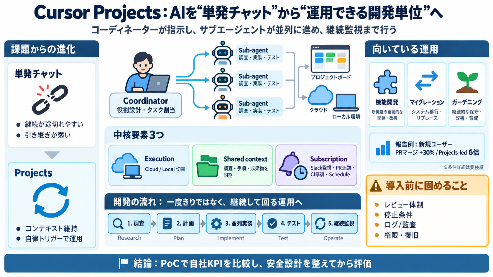

"Introducing Projects, a new way of working in Cursor. ...
@cursor\_ai Introducing Projects, a new way of working in Cursor. Rather than creating a chat for every task, you work …

Cursor Projects / 委任開発
Projectsは、単発チャットではなく「長期の開発プロセス」をプロジェクト単位で維持する仕組みです。 （コーディネーターが指示し、サブエージェントが並列に進め、継続監視まで行う）
単発→運用が必要
長期開発では、調査・実装・テスト・レビュー・反復・保守が連続します。 しかし単発チャットは「指示した瞬間に動く」ため、継続的な推進と引き継ぎが途切れやすいです。
1人の指示役
Projectsは「コーディネーター」が複数の実行役（サブエージェント）を束ね、並列に仕事を進めます。 ユーザーは細かな手順を都度指示せず、「やりたいこと」をプロジェクトとして渡します。
役割設計・タスク割当 / 指示（指揮）
実装・調査・テスト / 実行（手を動かす）
中核要素3つ
Projectsの中核は、実行基盤（クラウド/ローカル切替）、共有コンテキスト（学びの蓄積）、サブスクリプション（自律トリガー）です。 これで「実行開始」だけでなく「継続運用」まで保てます。
Cloud（デフォルト）/ Local（必要時）
調査・手順・アーティファクトを同期（学習効果）
Slack監視・PR追跡・CI修復・スケジュール実行
流れを維持
ユーザーは逐次指示ではなく、Projectsに「やりたいこと」を渡します。 Projectsはプロジェクト単位で、調査→計画→並列実装→テスト→継続監視を維持します。
前提理解、方針探索
並列タスク割当・PR作成
PR追跡・CI修復・監視
実績データ
生産性の改善は、マージPR数の増加で提示されています。 新規ユーザー+30%、Projects主導ユーザーではマージPRが6倍という報告です。
PRマージ +30%
マージPR 6倍
※自社環境の報告で、測定条件（対象規模・期間・コードベース等）の詳細は本文中で不足しています。 （期待値は参考、導入判断は追加検証が必要）
おすすめ運用3種
Projectsは、機能開発・マイグレーション・ガーデニングの3つの運用に特に適していると位置付けられています。 どれも「大きな仕事」「複数PR」「継続」要素が強い仕事です。
並列実装＋ローカル実行で進行
安全な段階適用とレビュー量の調整
大量PRスキャン＋ルール追加の自動化
学習が再利用される
各Projectはクラウドとローカルのファイル群を同期し、調査結果・アーティファクト・作業手順を蓄えます。 あるエージェントがテスト手順を見つければ、以降のエージェントがそれを使えます。
引き継ぎが弱く、手順が散らばりがち
プロジェクト単位で再現性を高めやすい
止まらず反応する
Slack監視、スケジュール実行、PR追跡に連動してCIを修復するなど、トリガーを設定できます。 その結果、Projectsは「作業開始」だけでなく「運用・保守」まで担えます。
チャンネル監視（通知→行動）
PR状況に応じたCI修復
時刻・間隔での実行
普通のチャットとの違い
最大の違いは、Projectsが「プロジェクト単位でコンテキストと実行を維持」できる点です。 チャットは単発になりがちでも、Projectsは共有コンテキストとサブスクリプションで目的へ戻りやすくします。
単発指示になりやすい（継続が途切れがち）
継続運用（コンテキスト同期＋自律トリガー）
強みと注意点
強みは、並列実行と共有コンテキスト、サブスクリプションによる手戻りや運用の抜けを減らし得ることです。 ただし、誤学習や方針誤りが長期化するリスクや、停止・監査・復旧の具体が不足している点に注意が必要です。
手戻り/抜け低減（共有＋継続運用）
長期化リスク（誤った学びの伝播等）
導入時は、レビュー体制・停止条件・ログ/監査・セキュリティ要件・ロールバック手順を先に固めるのが安全です。 （便利そうで即採用しない）
結論
Projectsは、AIを「書く補助」から「運用可能な開発単位」へ近づける機能です。 生産性の可能性は高い一方、自社KPI・ガバナンス・安全設計を揃えてから評価するのが結論です。
PoCで自社指標比較
レビュー頻度・停止条件を設計
監査ログ/復旧/権限を確認
@cursor\_ai Introducing Projects, a new way of working in Cursor. Rather than creating a chat for every task, you work …
インテリジェントなコンテキスト管理: コードベースのインデックス化、セマンティック検索、Instant Grep により、エージェントはより速く、より効率的に適切な結果へたどり着けます。 MCP サーバー: エージェントは、`.curso…
### 新着記事 ニュース #### OpenAI、フラッグシップモデル「GPT-6 Astra」公開 法務AIの実用性をどう変えるか 2026年9月7日 室谷テキトー教師 ニュース #### Claude Codeを生んだAn…
リポジトリのAppsタブからVercelを接続すると、すべてのPRでプレビューデプロイを利用でき、テストやコメントを行えます。マージすると、本番環境にデプロイされます。CIにはDepotまたはBuildkiteを接続してください。どちらも既…
Cursor を「PM 補助輪」ではなく「PM エンジン」として捉える · ガントチャートは一度作ると「後から変えにくい」構造を持っています。 · Cursor で生成した